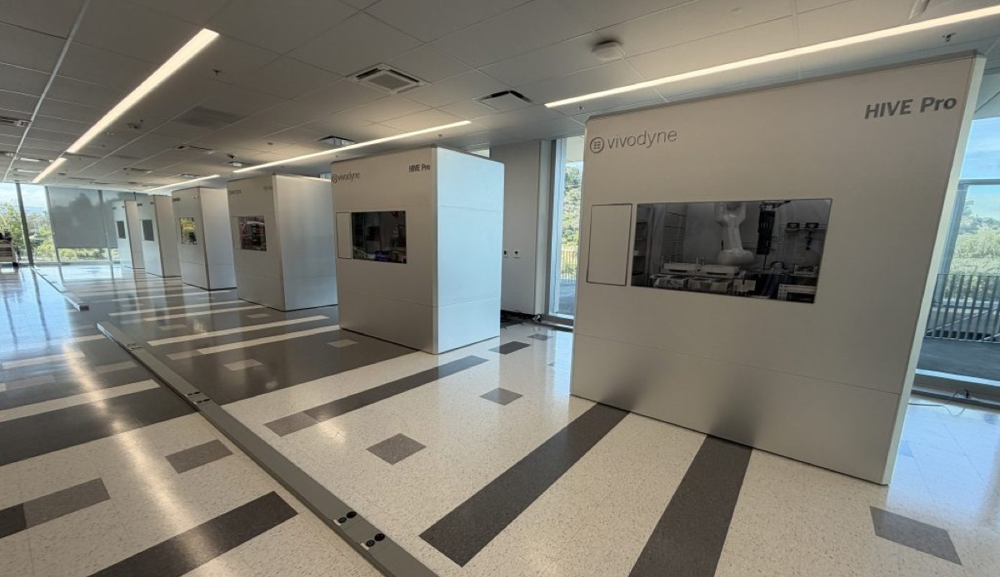

Executive Summary
The promise that AI will cure cancer has started to sound like a cliché even inside the industry. Vivodyne, a company with labs in Philadelphia and San Francisco, looks for the reason in the data rather than the model. Not that the models are too small or the data too scarce, but that the cell data piled up so far does not carry what causes what inside a human body. And that diagnosis went straight into hardware. HIVE is a robotic lab that grows human tissue and doses it directly.
The evidence the company offers is concordance with human trials. The headline figure is 94% in liver tissue, and there is one easy misreading here. That number is not a model's predictive accuracy. It measures how often this lab reached the same answer as an actual trial in people. It comes with a caveat, since the number was disclosed by the company and its founder to the press rather than validated and published by a third party.
A study published in Nature Methods this June showed that single-cell foundation models stop improving as pretraining data keeps growing. The paper did not identify the absence of causality as the reason; that reading comes from the founder. Once the two claims are read apart, one question is left over. Is the data we have been gathering a record of states, or a record of interventions and their results?
Key Numbers
The first two cards say what this company claims it can do; the last two say why the claim carries weight right now. The sources differ in kind, so company disclosures and outside findings should be read separately.
Sources: TechCrunch (2026-08-19), Nature Methods (2026-06-09), FDA roadmap (2025-04-10)
94% · 96% · 100%
Concordance with human trials
94% in liver tissue, 96% in airway tissue, and 100% in bone marrow across 20 cancer drugs, as disclosed by the company
10,000
Tissues one HIVE tests at once
Culture, dosing, imaging, and data generation take one to two weeks, according to the company
22.2M cells
Corpus where performance plateaued
The Nature Methods study pretrained 400 models on this corpus and found no clear scaling law
90%+
Failure rate after animal testing
The figure the FDA cited in its animal-testing phase-out roadmap, noting predictivity is lowest in cancer and Alzheimer's
Pointing at the Data, Not the Model
On August 16, in the middle of a public argument with an investor, Anthropic's Dario Amodei wrote that "saying that AI will cure cancer is more a cliché than it is inspiring, and most people think it is deceptive." The line that followed: "The thing that will work is actually curing cancer." Amodei had not turned pessimist. In the same post he restated a timeline of five to ten years for curing most human disease, and that part drew immediate pushback for being naive. The signal was not that optimism had gone out of fashion, but that the industry had grown tired of the way optimism gets sold.
Three days later, TechCrunch reported a concrete answer to that fatigue from Andrei Georgescu, Vivodyne's co-founder and CEO. "Absent human testing, what are these models going to do?" he asked, and answered himself: "They're going to cure cancer in mice." If what a model learned came out of animals and culture dishes, then what the model gets good at ends at exactly that boundary.
The contrast is not idle provocation. AlphaFold went all the way to a Nobel Prize for protein structure prediction and has yet to produce a single approved drug, and Isomorphic Labs, which carries that lineage forward, pushed its first clinical trial from 2025 to late 2026. Isomorphic itself acknowledged in February that real drug discovery requires high-accuracy prediction across the full range of biochemical properties. What models can do has grown quickly. The question of what those models were fed has not gone away.
This Robot Does More Than Watch
The company describes this setup as compressing an entire animal vivarium into one system. That system runs three layers deep. At the base sits a microfluidic chip called the TissueDisk, on which hundreds of human tissues grow by self-assembly from a single disk. More than 20 tissue types are built on top of it, each tissue holding somewhere between 200,000 and 500,000 cells. Then comes HIVE, a robotic lab that carries culture, dosing, and observation through in sequence without human hands.

The robot's job does not end at looking in. HIVE perturbs the tissue with a drug and then reads phenotype through 3D confocal imaging, the transcriptome through single-cell RNA sequencing, and the proteome through 1,000-plex protein profiling. The experiment is itself the intervention, and before and after stay connected in the same tissue. One HIVE tests 10,000 human tissues at a time and returns data within one to two weeks, according to the company. The stated application areas include lung tumors, cell therapies, fibrosis, and drug-induced liver injury, and Chief Biotechnology Officer Tony Bahinski summarized the purpose of the machine in one sentence: "Prediction means knowing what happens when you try something new."
The performance evidence the company puts forward is concordance with human trials. Toxicity responses in liver tissue matched actual human trial results 94% of the time, airway tissue reached 96%, and bone marrow matched 100% across a panel of 20 cancer drugs. These numbers measure how well a substitute testing platform stands in for people rather than how accurate a predictive model is, and they come from company statements to the press rather than from peer review. The human biological datacenter the company announced on August 12 is a disclosure of the same kind. Twelve HIVE units are said to handle 3.1 million large human tissue experiments a year, with eight large pharmaceutical companies paying for early access, though none of those companies were named.

There Was Plenty of Data, and It Was Snapshots
A study published in Nature Methods on June 9 measured head-on how far it pays to keep enlarging pretraining data for single-cell foundation models. Pretraining 400 models on a corpus of 22.2 million cells and evaluating them across 6,400 experiments, the authors found that performance plateaued once only a fraction of the training corpus had been used. The paper concludes that the data scaling laws familiar from language and image models do not appear clearly on the single-cell side, and it advises developers to balance model size, dataset size, and compute rather than scaling any one of them blindly.
Fact and interpretation need separating here. What the paper established is the plateau itself, not a statement that the cause is an absence of causality. Reading the cause that way is Georgescu's move. "All the training is done on static snapshots of these cells," he says, "and the models are not conditioned at all by the how — a cell got to that state." One sentence sums up his diagnosis: the model learns "this is cell state A" and "this is cell state B," but never "cell state B is the effect of inflaming cell state A."
Why the distinction matters in practice shows up in combination therapy. The moment two or more drugs are combined, the space to be searched explodes, and testing candidates one at a time stops being feasible. At that point the direction of the question reverses. You want a given effect to happen, so which cause do you have to invoke? Answering a question that runs backward from effect to cause requires that causes and effects sit paired inside the data.
The diagram below sets two ways of recording the same cells side by side. On the left is the data collected so far, where states measured separately in different samples each leave a trace of their own. What produced those states is not in the record. On the right is the data HIVE generates, where the same tissue before and after a drug is carried through as one continuous record. No amount of growing the cell count in the left-hand column turns it into the right-hand one.
Why Did This Lab Arrive Now, of All Times?
Technology alone does not explain the timing. In April 2025 the FDA published a roadmap to phase down and replace animal testing in the development of monoclonal antibodies and other drugs. It named organoids, organ-on-chip systems, computational modeling, and AI-based toxicity prediction as the replacements. The number offered as justification was that more than 90% of drugs that clear animal testing never win approval, and the document added that animal data is least predictive in cancer, Alzheimer's, and inflammatory disease. In April of this year the FDA said it had met the roadmap's first-year goals.
Capital moved earlier than that. Spun out of the University of Pennsylvania in 2021, the company raised a $38 million seed led by Khosla Ventures in November 2023, followed by a $40 million Series A led by the same investor in May 2025. The two rounds together come to just under $80 million, and that money opened a 23,000-square-foot fully automated lab in Brisbane, near San Francisco, and built out production of 20 tissue types. Georgescu said at the time that "a model that is only predictive 5% of the time isn't a model," adding that pharma had waited decades for scalable human data ahead of clinical trials.
Regulators pulling back from animal data, fatigue with a certain kind of rhetoric, and a stretch in which model-side wins have not carried into the clinic all overlap here. That does not make the company's claims verified. It does explain why they are being heard now.
The Same Question Sits in Our Data
What travels out of this case is not the 94%. It is that a diagnosis of too little data and a diagnosis of the wrong kind of data lead to entirely different prescriptions. The first sends you toward collecting more. The second sends you back to redesigning the apparatus that generates data in the first place. That is why Vivodyne is a laboratory company rather than a pipeline company.
The skeptical points are equally clear. The concordance figures are company disclosures and have not been peer reviewed. The eight pharmaceutical companies that bought early access are unnamed, and the 3.1 million experiments a year reads closer to a specification than to a delivered record. The Nature Methods paper is public only through its abstract, so how far the authors traced the cause of the plateau requires the full text to know. None of this says the company is right. It says the question the company asked is the right one.
That question holds well outside biology. Are the logs and measurements we have accumulated a record that some state existed, or a record that changing one thing changed another? If the latter is what you need, it does not get made during cleaning. It gets decided where you choose what to record, which is to say in the apparatus where data is first created.
Editor's Note: The scene Pebblous keeps meeting in data quality work looks much the same. However well you wash data that has already piled up, a field that was never recorded cannot be restored. What gets kept is usually decided on the side that produces the data, and no amount of growing the model later reverses that decision.
Earlier pieces along the same axis include Cancer Drug Response AI Improved Only on Unseen Drugs, on how the way drug-response data is split changes what performance means, and Masking Only Six Antibody Loops Lifted Binding Prediction Up to 27%, on how the choice of what to mask in biological data drove the result. The original report is at TechCrunch.
References
R.1Academic Papers
- 1.DenAdel, A. et al. (2026). "Evaluating the role of pretraining dataset size and diversity on single-cell foundation model performance." Nature Methods 23, 1447–1457.
R.2Industry & Press
- 2.Fernholz, T. (2026). "AI isn't close to curing cancer. This startup says it knows what it will take." TechCrunch, 2026-08-19.
- 3.Pennic, F. (2025). "Vivodyne Secures $40M Series A to Scale AI-Powered Human Tissue Testing." HIT Consultant, 2025-05-30.
R.3Official Documents & Announcements
- 4.Vivodyne. "Vivodyne — Make biology computable." Official site (accessed 2026-08-20).
- 5.Vivodyne. (2026). "Vivodyne Launches the World's Largest Human Biological Datacenter to Train the First World Model of Human Biology." BusinessWire, 2026-08-12.
- 6.U.S. Food and Drug Administration. (2025). "FDA Announces Plan to Phase Out Animal Testing Requirement for Monoclonal Antibodies and Other Drugs." 2025-04-10.
- 7.U.S. Food and Drug Administration. (2026). "FDA Achieves Year 1 Goals in Reducing Animal Testing in Drug Development." 2026-04.